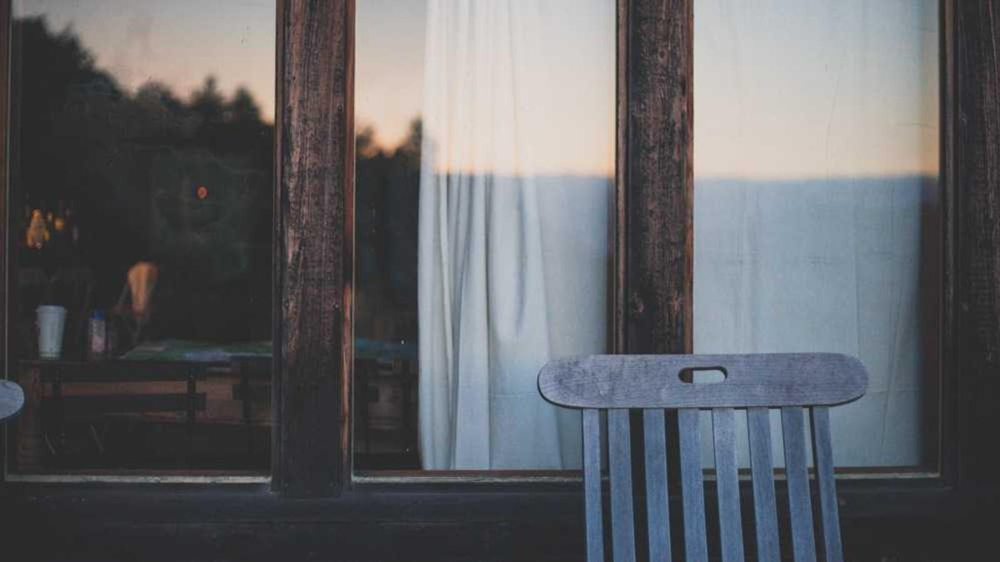
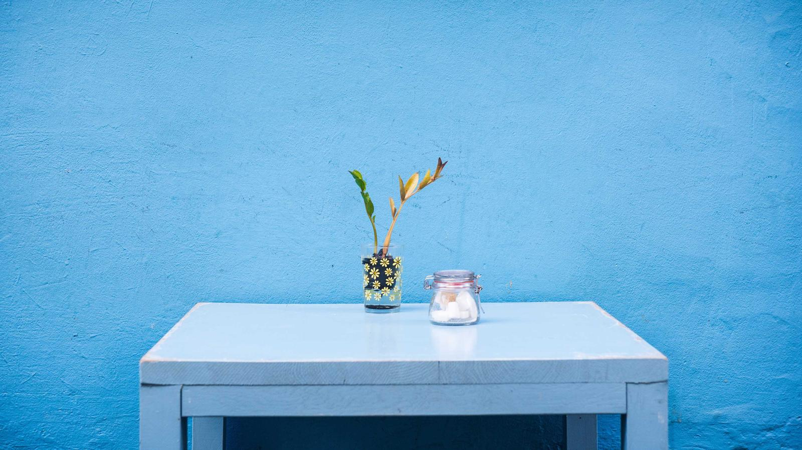
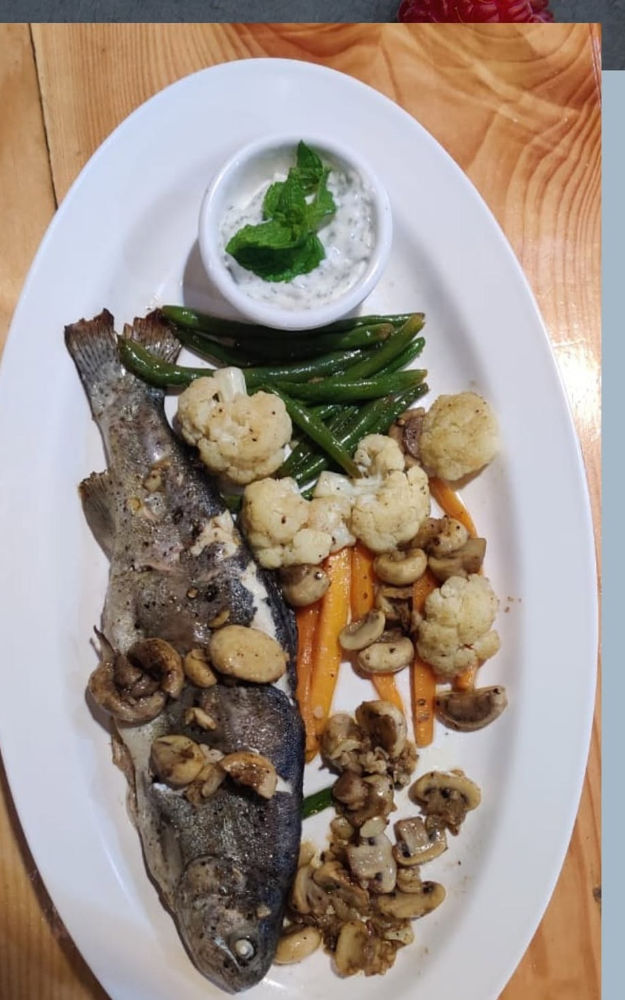
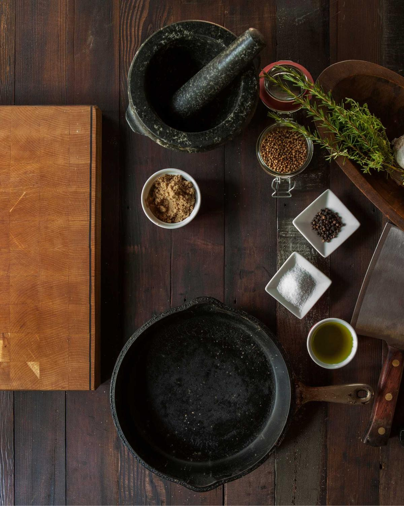
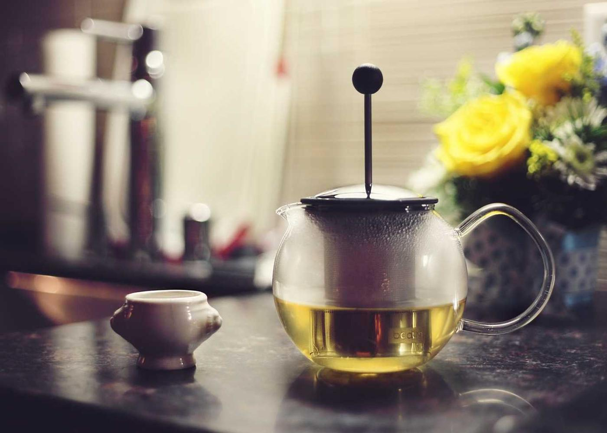
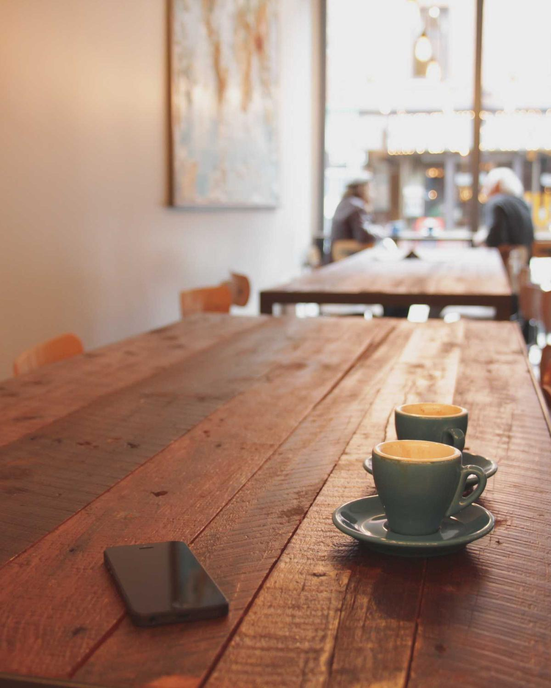
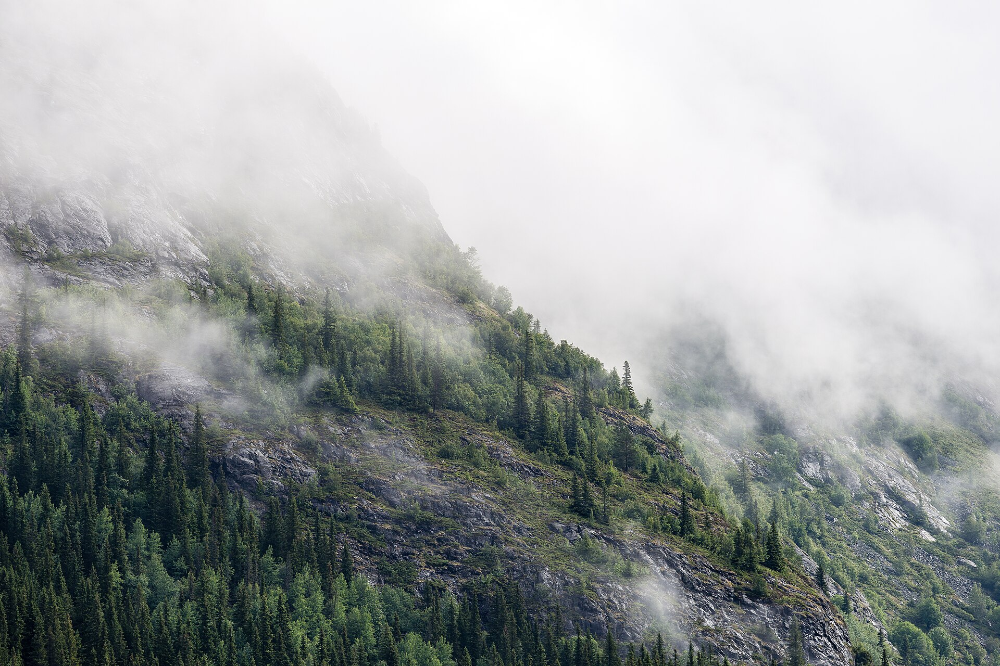
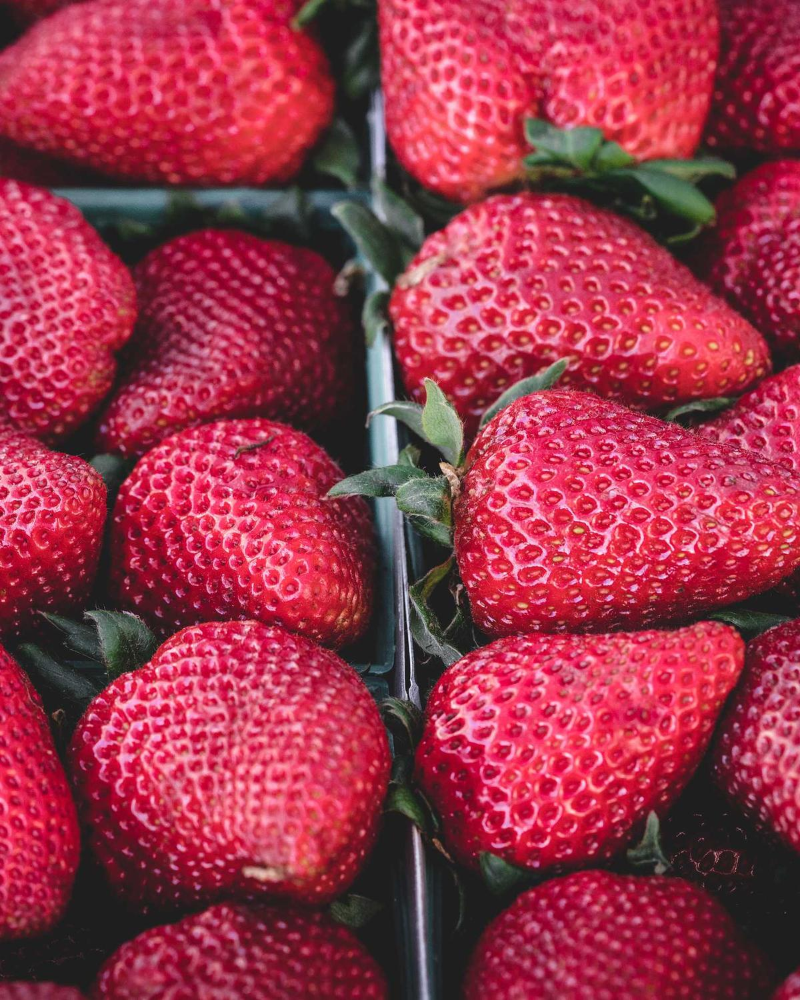
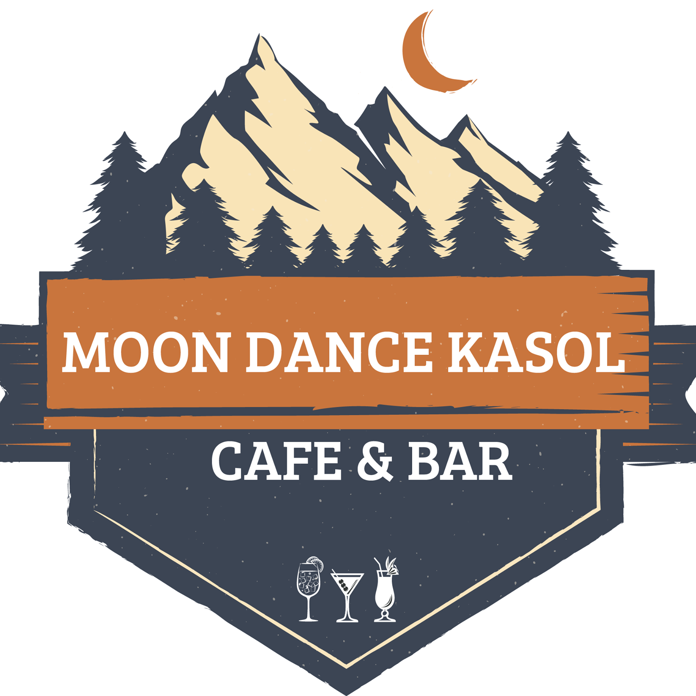

On the main road since 1992.



Trout, bakes and slow evenings.


Generic atmosphere photographs, shot elsewhere, in the spirit of the place.

Cafe, Bar & German Bakery, since 1992
An independent introduction, not affiliated with the cafe. The trout plate and the badge are the cafe's own, from their Facebook page. All other photographs are generic atmosphere shots via Unsplash: Logan Adermatt, Todd Quackenbush, Luke Chesser, Vee O, Padurariu Alexandru and veeterzy, plus a misty forest slope by Jon Flobrant, CC0, via Wikimedia Commons. Facts from the cafe's own Facebook page and public listings.